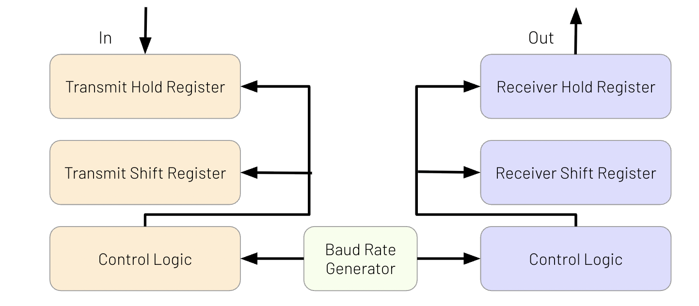
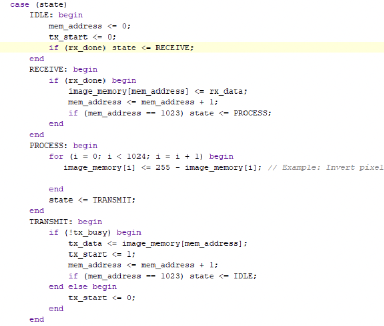
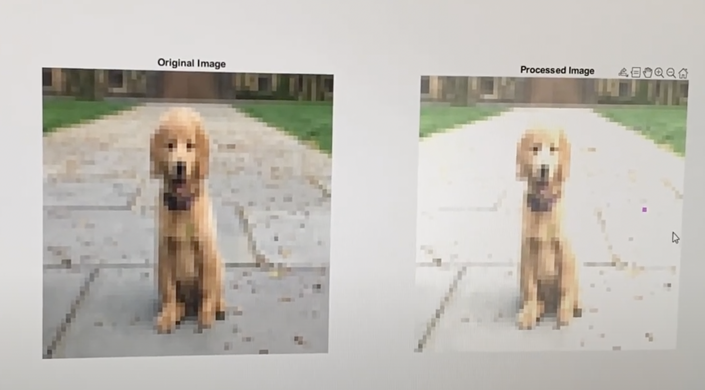
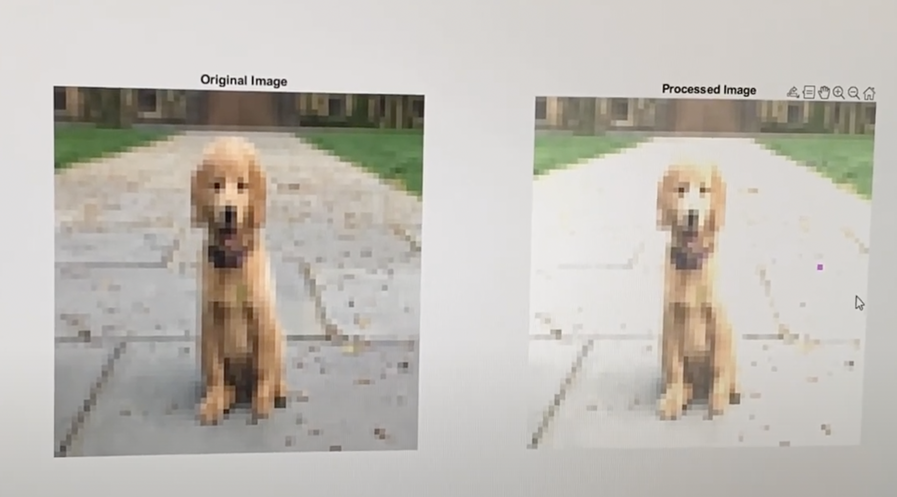

If the video doesn't load, you can watch it directly on YouTube.
Project Overview
Built a hardware-accelerated image processing system using UART communication between MATLAB and an FPGA. The system performs darkening, brightening, and inversion transformations on images in real time.

System Workflow
MATLAB reads and converts the image into 8-bit RGB values, sending them byte-by-byte over UART to the FPGA. The FPGA uses FSMs to receive, process, and return transformed pixels back to MATLAB for display.


Features
- 3 image transformations: lighten, darken, invert
- Hardware control via Basys 3 board switches
- Verilog modules for receiver, transmitter, and FSM-based control
- MATLAB GUI for visualization and UART interfacing
 
